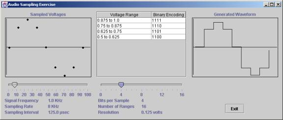

The program that generated these windows will not run from a web page because current web browsers do not support the latest version of Java unless you install a special “plug-in” on your computer. Instead, it runs as a standalone program that has to be installed on your computer in order to run.
You can download AudioSampling.java. The code uses Sun’s “Swing” components, so to compile and run it, you will need version 1.2 of Sun’s Java 2 Platform, which you can get from Sun Microsystems. You can download the big (30 MB) SDK (Software Development Kit) if you want to compile the program yourself. Or, if you don’t want to download and install so much software, you can download the smaller (5 MB) JRE (Java Runtime Environment), which you will also find on the Sun website. If you do that, you should download AudioSampling.jar, which contains an already-compiled version of the program. Follow the instructions on the web site for installing the JDK or JRE. If you plan to do Java development yourself, be sure to download and install the 20 MB documentation file for the JDK too.
To compile the program yourself, first install the SDK according to the directions that come with it. Then create a new directory on your hard drive for this project, and put AudioSampling.java in it. Start a “DOS Command Window,” change to the directory where you put the file, and give the following command to compile the program:
javac AudioSampling.java
That command will generate several class files in your directory. To run the program, give the following command:
java AudioSampling
To run the precompiled version of the program first install the JRE according to the directions that come with it. Then create a new directory on your hard drive for this project, and put AudioSampling.jar in it. Start a “DOS Command Window,” change to the directory where you put the file, and give the following command to run the program:
java –cp AudioSampling.jar AudioSampling
You can specify initial values for the signal frequency, sampling rate, and bits per sample at the end of the command line. For example, if you want to start with a sampling rate of 8 KHz, add “rate=8” at the end of the line. The quotation marks are optional, but you need them if you put any spaces around the equal sign. Use bitspersample to specify the number of bits per sample, and use frequency to specify the signal frequency. You can abbreviate the keywords if you don’t want to type them out.
When the program runs, you can adjust the sampling rate and the bits per sample using the slider controls at the bottom, using either the mouse or the arrow keys. You can also re-size the window at any time.
Please let me know what bugs you find, or if you have any suggestions for making the program a better learning tool.